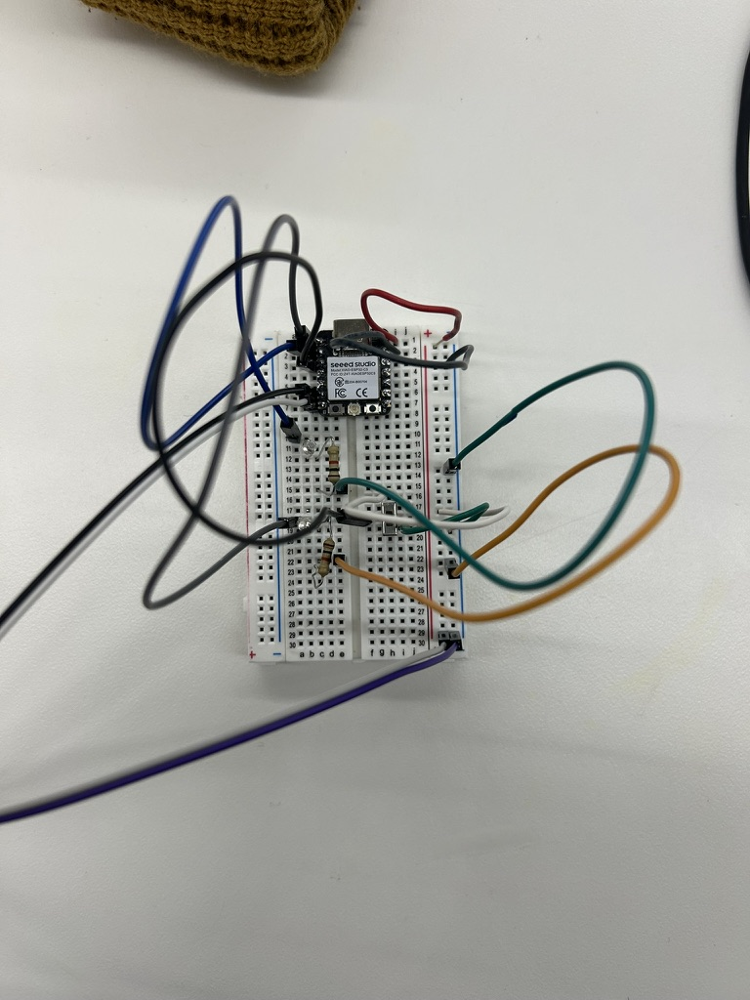
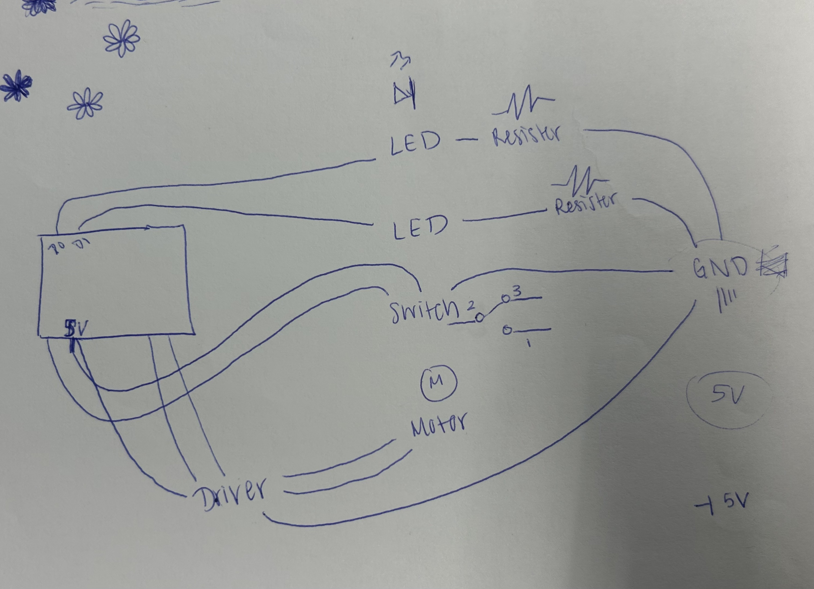

<div class="textcontainer">
<p class="margin"> </p>
<h3>Week 4: Microcontroller Programming</h3>
<p class="margin"> </p>
<p></p></img>
<h4>The Assignment</h4>
<p>This week's task was to program an Arduino board to perform a specific sequence of actions. I chose to build upon my kinetic sculpture from last week (the Ferris Wheel) by automating its motion and adding safety light indicators to simulate what a real-world ride would feel like (green light signals go ahead and board when the ride is not moving, red light signals to stop and wait when the ride is in motion).</p>
<p class="margin"> </p>
<h4>Concept & Design</h4>
<p>The goal was to create some sort of "loading cycle" for the ferris wheel. In a real theme park, a ride must stop to let passengers on and signal when it is safe to do so. My project implements this logic using a switch, a motor, and two LEDs (red and green). Fun fact that Kassia and Jessica said this was the first extremely successful and accurate to a real life implementation of a ferris wheel!</p>
<p><strong>Logic Flow:</strong></p>
<ul>
<li><strong>Loading Phase:</strong> The motor stops, and the <b>green LED</b> turns on for 3 seconds, signaling that "passengers" can board.</li>
<li><strong>Ride Phase:</strong> The motor spins, and the <b>red LED</b> turns on for 5 seconds, signaling that the ride is in motion and boarding is closed.</li>
</ul>
<p class="margin"> </p>
<h4>Electronics & Schematics</h4>
<p>I used the following components for this circuit:</p>
<ul>
<li>Seeed XIAO ESP32-C3 Microcontroller</li>
<li>L9110 Motor Driver (A1A and A1B pins)</li>
<li>DC Motor (connected to the ferris wheel)</li>
<li>1x Slide Switch (set to Input Pullup)</li>
<li>1x red LED and 1x green LED</li>
</ul>
<p></p>
<p>The wiring followed a standard motor driver setup. The most challenging part of the electronics was troubleshooting the switch; I initially had trouble getting the input to read correctly, but after some research, I successfully implemented it using the internal pull-up resistor.</p>
<p class="margin"> </p>
<h4>Programming with <code>millis()</code></h4>
<p>A key requirement for this week was avoiding the <code>delay()</code> function. Using <code>delay()</code> "freezes" the microcontroller, making it unresponsive to inputs (like turning the switch off mid-cycle). Instead, I used <code>millis()</code> to track elapsed time. This allows the code to remain "non-blocking" and keeps the system responsive. I tried this approach and it worked well! I had no idea this function existed--up to this point, I've only ever seen <code>delay()</code> before, but it's super useful and I definitely will use it in future projects. The code file I used is below:</p>
<pre><code class="language-arduino">
const int ledPinGreen = D0;
const int ledPinRed = D1;
const int switchInput = D2;
int val;
unsigned long previousTime = 0;
unsigned long currentTime;
const int A1A = D6;
const int A1B = D5;
void setup() {
pinMode(ledPinGreen, OUTPUT);
pinMode(switchInput, INPUT_PULLUP);
pinMode(ledPinRed, OUTPUT);
pinMode(A1A, OUTPUT);
pinMode(A1B, OUTPUT);
digitalWrite(A1A, LOW);
digitalWrite(A1B, LOW);
Serial.begin(9600);
}
void loop() {
val = digitalRead(switchInput);
if (val == LOW) { // Switch is activated
Serial.println("Switch on");
// PHASE 1: Loading (Stop motor, Green Light)
previousTime = millis();
currentTime = millis();
while (currentTime - previousTime < 3000) {
digitalWrite(ledPinRed, LOW);
digitalWrite(ledPinGreen, HIGH);
digitalWrite(A1A, LOW);
digitalWrite(A1B, LOW);
currentTime = millis();
}
// PHASE 2: Riding (Spin motor, Red Light)
previousTime = millis();
currentTime = millis();
while (currentTime - previousTime < 5000) {
digitalWrite(ledPinRed, HIGH);
digitalWrite(ledPinGreen, LOW);
digitalWrite(A1A, HIGH);
digitalWrite(A1B, LOW);
currentTime = millis();
}
} else {
// Idle state: Everything off
digitalWrite(A1A, LOW);
digitalWrite(A1B, LOW);
digitalWrite(ledPinGreen, LOW);
digitalWrite(ledPinRed, LOW);
}
}
</code></pre>
<p class="margin"> </p>
<h4>Final Results</h4>
<p>The automated ferris wheel works exactly as intended! The transition between the green "boarding" light and the red "running" light adds a layer of realism to the sculpture, which I love! It's also just super fun to work with LED indicators. Moving from simple manual control to a timed logic sequence was a great learning experience in state management and timing, as well as a great opportunity to practice using the <code>millis()</code> function. </p>
<video>
<source src="IMG_1462.mp4" type="video/mp4">
Your browser does not support the video tag.
</video>
<p class="margin"> </p>
<h4>Challenges & Lessons</h4>
<p>The main hurdle was the switch wiring. I had to learn how <code>INPUT_PULLUP</code> works—essentially using the internal resistor of the ESP32 so I didn't have to add an external resistor to the breadboard. For future iterations, I would love to add a potentiometer to control the speed of the motor during the "ride" phase, as that's definitely something that reflects real world experiences and control.</p>
</div>